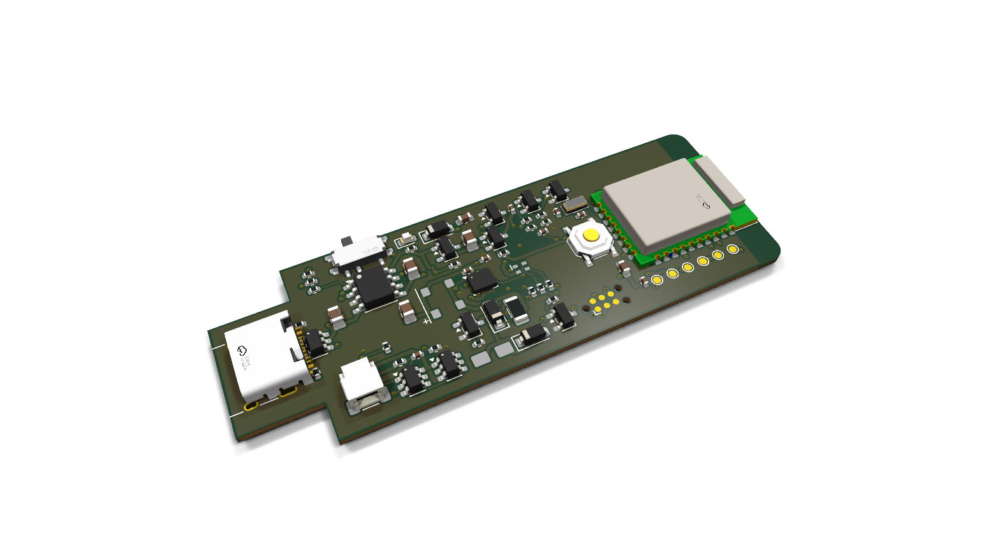
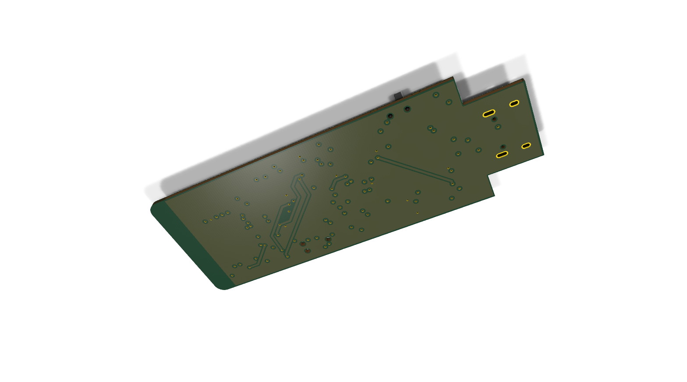
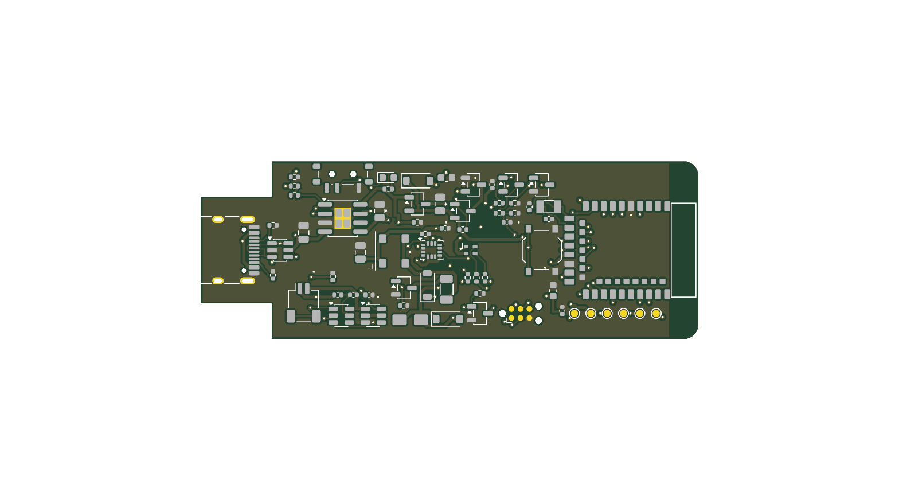
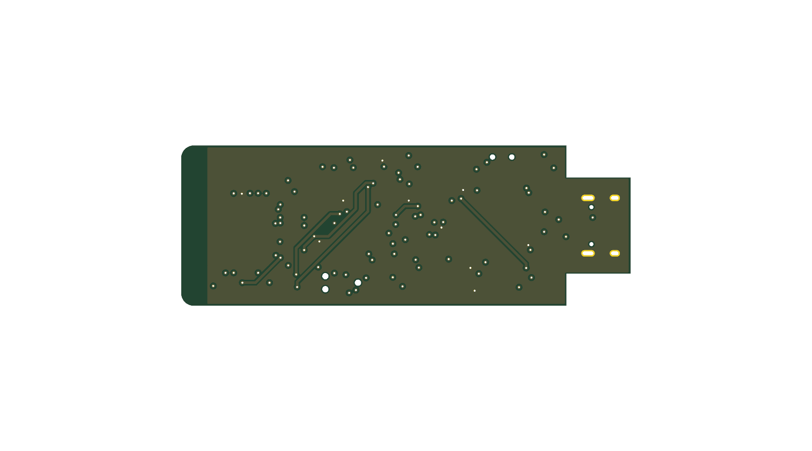
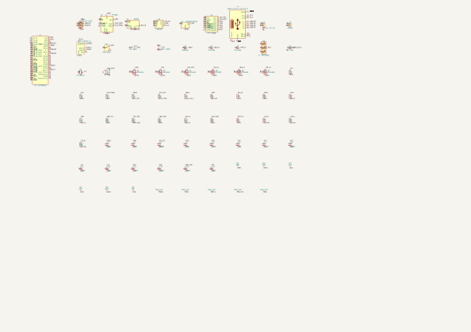

| Signal | GPIO | Funktion |
|---|---|---|
| BTN | P0.28 | Taster aktiv low (auch Update-Modus) |
| LED_R/G/B | P0.30/31/29 | RGB, aktiv low |
| MOT_EN / BUZ_PWM | P1.13 / P0.02 | Motor / Summer (2–4 kHz) |
| IMU SCK/MOSI/MISO/CS | P0.06/P0.08/P1.09/P0.12 | SPI |
| IMU_INT1/2 | P0.07 / P0.26 | Data-ready, Wake-on-motion |
| VBAT_ADC / VBAT_EN | P0.04 / P0.05 | Akkuspannung, schaltbarer Teiler |
| SWDIO/SWCLK/RST | – | TC2030 Programmieren + RTT |
| Teil | LCSC | Zweck |
|---|---|---|
| E73-2G4M08S1C 📄 | C356849 | nRF52840-Funkmodul |
| ICM-45686 📄 | C22459454 | IMU |
| TP4056 📄 / DW01A / FS8205A | C16581 / C351410 / C2830320 | Laden + Akkuschutz |
| XC6206P332 📄 | C5446 | 3.3 V LDO |
| TYPE-C-31-M-12 / USBLC6-2SC6 | C165948 / C7519 | USB-C + ESD |
| SM02B-SRSS-TB | C160402 | Akkustecker JST-SH |
| XL-1615RGBC 📄, MLT-5020, Motor | C965840, C94598 | LED, Summer |
Teile ≈ 20.24 USD/Gerät (BERECHNUNG, JLC-Lager 2026-11-08).